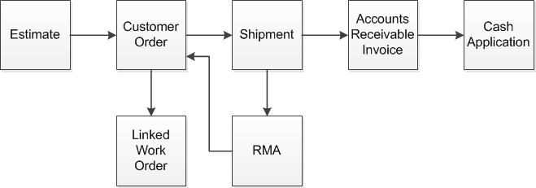

You can access the Lifecycle Document Viewer in these Sales modules:
Estimating Window
Customer Order Entry
Order Management Window
Manufacturing Window
Return Material Authorization
Shipment Entry
AR Invoices
AR Payments
This diagram shows a complete sales lifecycle:

If a work order is allocated to a customer order, then the work order is displayed in the lifecycle. If a new customer order is created to address an RMA, then the new customer order is also included in the lifecycle.